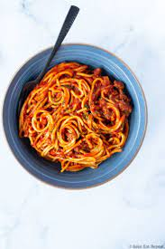

Spaghetti

Description
Spaghetti is the quintessential Italian pasta. It is long – like a string (hence the name, as spago means string) – round in cross-section and made from durum wheat semolina.
- Store bought noodles.
- Store bought sauce.
- Salt and pepper.
- Boil some water.
- While waiting for water to boil brown some hamburger meat.
- When water comes to a boil throw in them noodles.
- Drain grease from meat and set aside.
- Once noodles are cooked drain and return to pot.
- Add meat and spaghetti sauce to noodles and enjoy!